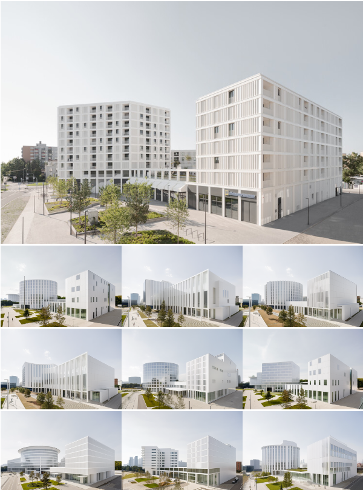
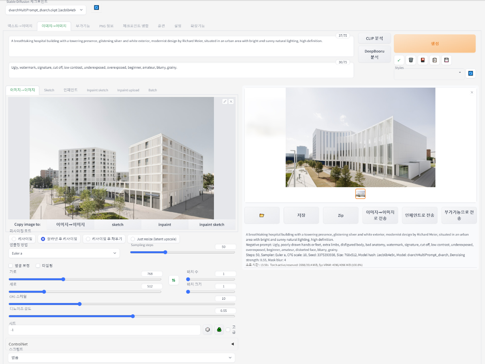
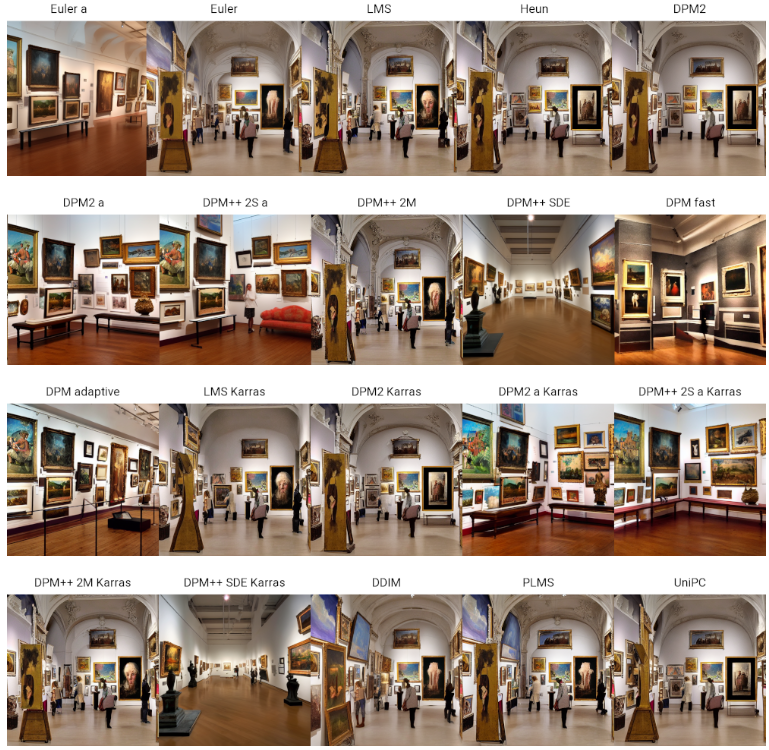
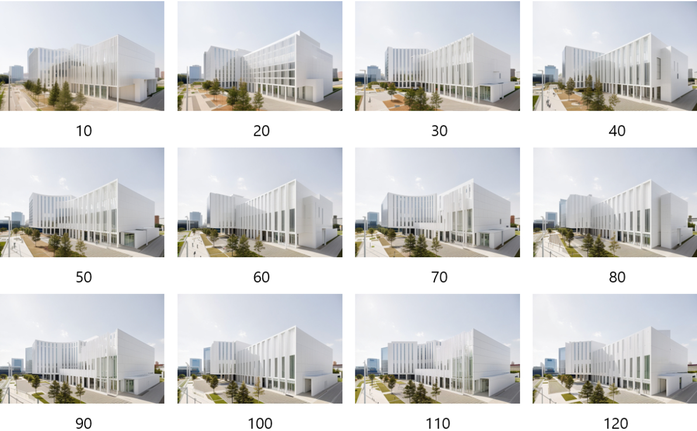
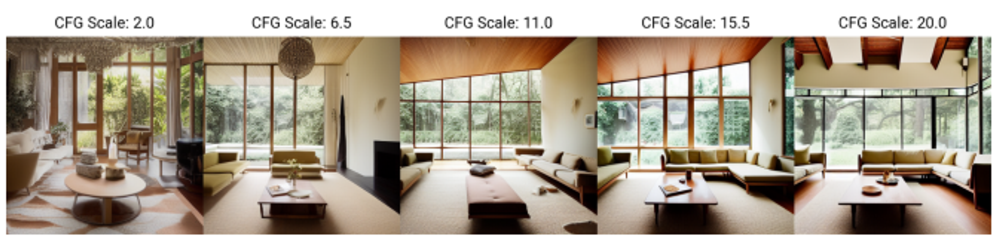
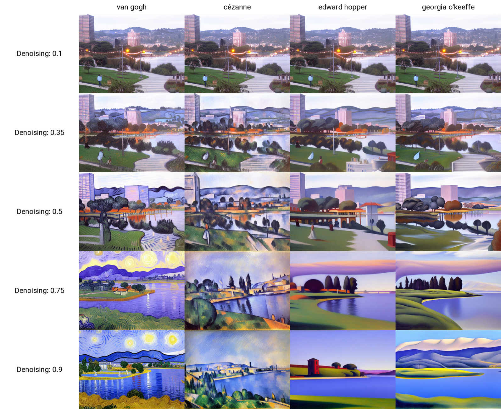
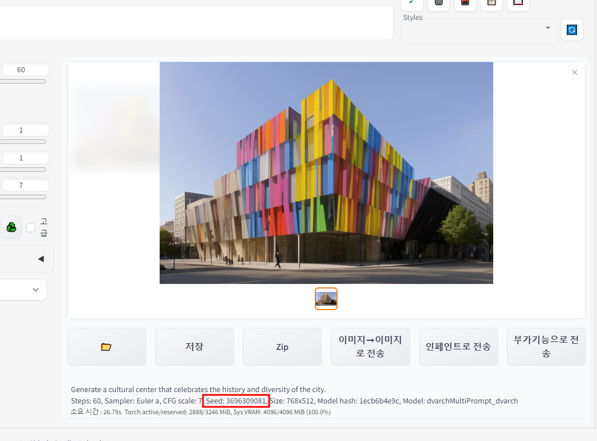

3-3 img to image
img to Img는 기존에 존재하는 Image를 첨부하여 또 다른 Image를 생성하는 것으로,
첨부된 이미지에서 파생될 수 있는 여러 디자인을 생성해줍니다.

Txt2img 과정을 이해하기 위한 변수들을 차례대로 설명하겠습니다.
1) Prompt (Positive Prompt / Negative Prompt)
2) Sampling Methods
3) Sampling Steps
4) Size (가로, 세로)
5) Batch
6) CFG Scale
7) Denoising Strength
8) Seed
1. Prompt
Img2img에서는 첨부한 Image에서 어떠한 변화를 주고자 하는지를 프롬프트에 써주시면 됩니다.
Positive Prompt : 'A hospital building with a towering presence, glistening silver and white exterior, modernist design by Richard Meier, situated in an urban area with bright and sunny natural lighting, high definition.'
Negative Prompt : 'Ugly, watermark, signature, cut off, low contrast, underexposed, overexposed, beginner, amateur, blurry, grainy.'
2. Image
변화를 주고자 하는 이미지를 선택합니다.

3. Sampling Method

Prompt – A middle century art gallery with several digital art pieces
Steps – 27
Image Size – 512 x 512
CFG Scale – 7
Seed – 1573819953
2-1. Sampling Method
각각의 Sampling Method는 샘플 추출 과정에 대해 다른 접근법을 제공합니다.
모델이 생성하려는 이미지로 벡터들이 이동하는 방법을 결정하는 데 중요합니다. 'Euler a' 방법을 사용하는 것이 일반적이지만, 다른 샘플러를 시도하는 것도 가능합니다.
2-2. 샘플러의 영향
대부분의 샘플러는 이미지를 비슷하게 생성하지만, 일부 샘플러는 큰 영향을 미칠 수 있습니다. 어떤 샘플러는 적은 단계로 더 잘 작동할떄, 또 어떤 샘플러는 특정 범위의 샘플링 단계에서 더 높은 품질의 이미지를 생성할 수 있습니다.
4. Sampling Steps

3-1 Sampling Steps
이미지 생성 과정의 단계를 의미하며, 품질과 스타일에 직접적인 영향을 미칩니다.
일반적으로 더 많은 Sampling Steps를 사용하면 더 높은 품질의 이미지를 생성할 수 있지만, 생성 시간이 더 길어집니다.
반면, 너무 적은 Sampling Steps는 이미지의 품질 저하를 초래할 수 있습니다. Sampling Steps는 이미지의 품질과 스타일, 그리고 생성 시간 사이의 균형을 맞추는 데 중요한 역할을 합니다. 따라서 상황에 맞게 조절하여 사용하는 것이 좋습니다.
4. Size
4-1 Size
Stable Diffusion과 같은 모델들은 특정한 이미지 사이즈,
예를 들면 512~1024의 픽셀로 트레이닝됩니다.
트레이닝 사이즈는 모델이 이미지를 생성할 때 가장 효율적으로 작동하는 크기를 나타냅니다. 즉, 학습 데이터에 기반하여 비슷한 사이즈의 이미지 일때 가장 안정적이고 정확한 결과를 제공합니다.
4-2 크기 증가의 영향
만약 트레이닝 사이즈보다 큰 이미지를 생성하려고 시도한다면, 예상치 못한 결과가 발생할 수 있습니다.
예를 들어, 모델이 하나의 건물 대신 두 개의 건물을 만들거나,사람의 형태가 이상하게 나타나는 경우 등이 있습니다.
이러한 현상은 모델이 더 큰 이미지에 대해 최적화되지 않았기 때문에 발생합니다.
5. Batch
Batch 설정은 Stable Diffusion에서 한번에 생성할 이미지의 수와 단위를 결정하는 설정입니다.
5-1 배치 수
생성할 이미지의 총 개수를 정하는 설정입니다.
5-2 배치 크기
한 번에 생성할 이미지의 수를 정하는 설정입니다.
한 번의 실행으로 몇 장의 이미지를 동시에 생성할지 결정합니다. (Vram) 사용이 늘어납니다.
6. CFG Scale
CFG Scale은 Stable Diffusion의 중요한 설정 중 하나로, 프롬프트에 얼마나 충실할 것인지 결정하는 가중치입니다.

출처 : https://www.bercon.org/b24f00d3-bf56-4f3c-977e-b9de6b59ecf4
6-1 CFG Scale
프롬프트에 따른 이미지의 생성 정도를 조절합니다.
높은 CFG Scale 값은 프롬프트에 더 충실한 이미지를 생성하지만, 동시에 프롬프트에만 편향될 가능성이 높아집니다. 낮은 CFG Scale 값은 더 창의적인 결과물을 얻을 수 있지만, 프롬프트와는 동떨어진 내용이 나올 수 있습니다. 일반적으로 7~11 범위의 CFG Scale이 적당합니다.
7. Denoising Strength

Denoising Strength는 원본 이미지를 얼마나 변경할 것인지 결정하는 설정값입니다.
0부터 1 사이에서 조절할 수 있으며, 0은 원본 이미지에 변화를 주지 않음을, 1은 완전히 새로운 이미지를 생성함을 의미합니다.
8. Seed

8-1 Seed
-1을 입력하면 매번 다른 이미지가 생성되며, 특정 시드 값 입력시 비슷한 구도나 스타일의 이미지를 반복적으로 생성할 수 있습니다. 하지만, 항상 정확히 동일한 결과를 보장하지는 않습니다.
8-1 change with same seed
이미지의 크기 와 프롬프트를 변경하면 동일한 시드 값을 사용하더라도, 조금 다른 구도나 스타일의 이미지가 생성될 수 있습니다. 시드 값과 이미지 사이즈, 프롬프트 변경은 ControlNet을 사용하여 다양한 결과를 탐색하고 실험하는데 유용합니다.